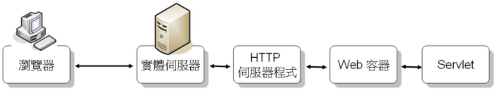
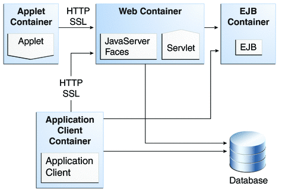

|
|
對於Java程式而言，JVM（Java Virtual Machine）是其作業系統，.java編譯為.class檔案，.class對於JVM而言，就是其可執行檔，你的Java程式基本上只認得一種作業系統，就是JVM。 當你開始撰寫Servlet/JSP程式時，你必須開始接觸容器（Container）的概念，容器這個名詞也用在如List、Set這類的Collection上，也就是用來持有、保存物件的群集（Collection）物件，不過，對於撰寫Servlet/JSP來說，容器的概念更為廣泛，在最基本的功能上，它不僅持有物件，還負責物件的生命周期與相關服務的連結。 在具體層面，容器說穿了，其實就是一個用Java寫的程式，運行於JVM之上，不同類型的容器會負責不同的工作，若以Servlet/JSP所運行的Web容器（Web Container）來說，也是一個Java寫的程式，想想看，HTTP那些文字性的通訊協定，如何變成你寫的Servlet/JSP中可用的Java物件（如HttpServletRequest、HttpServletResponse等），其實就是容器為你剖析與轉換。 在抽象層面，可以將Web容器視為你寫的Servlet/JSP的運行伺服器，是的！就如同Java程式僅認得JVM這個作業系統，Servlet/JSP程式在抽象層面上，也僅認得Web容器這個概念上的Web伺服器，只要你寫的Servlet/JSP是符合Web容器的標準規範，你的Servlet/JSP就可以在各種不同廠商實作的Web容器上運行，而不用理會底層真正的Web伺服器。 當然，實際上還是要有個Web伺服器，所以回到實際層面，Web容器是個Java寫的應用程式，可以成為實體Web伺服器程式的一部份，管理Servlet物件的生命週期，提供基於HTTP請求、回應的網路服務。 若以Tomcat為例，容器的角色位置可以用下圖來表示：  就如同JVM介於Java程式與實體作業系統之間，Web容器是介於實體Web伺服器與Servlet之間，也正如你撰寫Java程式必須了解 JVM/JRE與你的應用程式之間如何互動，你撰寫Servlet/JSP也必須知道容器如何與你的Servlet/JSP互動，如何管理Servlet 等事實（JSP最後也是轉譯、編譯、載入為Servlet，在容器的世界中，真正負責請求、回應的是Servlet）。 一個請求/回應的基本例子是：
不僅是寫Servet/JSP需要理解Web容器，在Java EE的領域無論是哪個技術，都與容器息息相關，寫Servlet/JSP需要理解Web容器，寫EJB需要了解EJB容器，寫應用程式客戶端需要了解應用程式客戶端容器，即使是寫個Applet，也會有個Applet容器的特性需要了解。 下圖是摘自 Java EE 6 Tutorial 中 Java EE 6 APIs 文件的容器示意：  對於Java EE 6規範中Servlet 3.0/JSP 2.2等，你可以使用的實際容器可以是Tomcat 7，或者是Glassfish v3，Tomcat 7專注在Web容器的部份，Glassfish v3是個完整的應用程式伺服器，當然也包括了Web容器的功能（當然，也還有其它廠商的實現）。 |